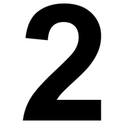

Le categorie primitive, modulo 6
La logica: problemi, non esercizi
Le strutture logiche nascono dal bisogno di risolvere problemi in tempi utili. Per questo i problemi vanno proposti, non tolti di mezzo.
la differenza
che conta
Problema o esercizio?
 problema
problema pensare
pensare esercizio
esercizioEsercizio
Una prova ripetuta per acquisire pratica. Utile, ma non costringe a inventare nulla.
Problema
Una situazione difficile che va chiarita e organizzata, che costringe a cercare strumenti e a inventare un modo per superarla.
Nei giochi motori, sportivi e non, i bambini affrontano continuamente problemi veri, sempre diversi e sempre motivanti.
Astrarre
 guardare
guardare sceglierepensare
sceglierepensareDopo aver risolto un problema «dandosi da fare», il bambino impara a considerare solo alcuni elementi della situazione, lasciando da parte gli altri. È il passaggio dall'azione sulla realtà all'azione sui segni.
- «Conta solo chi è arrivato primo, non come correva.»
- «Conta quante squadre, non di che colore sono le maglie.»
Forme equivalenti
 uguale
uguale tre
tre
dueSaper dire la stessa cosa in tanti modi diversi aiuta a risolvere i problemi con meno fatica: tre coppie, sei bambini, una fila da sei, due file da tre.
Cercare espressioni equivalenti è una strategia mentale da coltivare fin dai primi giochi, e diventerà indispensabile negli anni successivi.